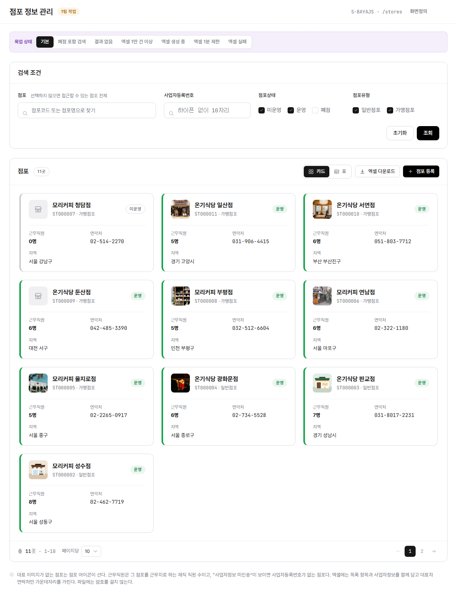

stores/index.html?embed=1 렌더링(LNB·상단 GNB 제외, 화면 본문만) 위에 번호를 붙이고 우측에 설명을 매칭했다. manyfast S-BAYAJS 기준.
화면명
화면경로
편집 모드: "핀 추가"를 누르고 화면을 한 번 클릭하면 그 자리에 새 번호가 생깁니다(또는 아래 "+ 항목 추가"로 기본 위치에 바로 추가). 기존 핀은 드래그로 옮기고, 오른쪽 × 로 지웁니다. Shift(또는 Ctrl)+클릭으로 핀 여러 개를 한꺼번에 선택해 같이 드래그할 수 있습니다. 빈 곳을 클릭하면 선택이 풀립니다. 항목명·설명은 클릭해서 바로 고치세요. 다 끝나면 "내보내기"로 새 HTML 파일을 받아 저장소 파일과 바꿔주세요(이 브라우저에는 임시로 자동저장됩니다).

Description
+ 항목 추가 (기본 위치에 추가 — 드래그로 옮기세요)
"목업 상태" 토글과 우측 상단 "화면정의서" 버튼은 실제 화면 요소가 아니라 목업 자체의 전환·문서화 컨트롤이라 번호에서 제외했다. 상단 GNB와 좌측 LNB는 이 화면정의서 스크린샷 자체에서 제외했다(embed 모드).